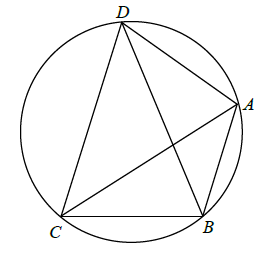

Jesteś tutaj: Matura
rozszerzona - kurs - część 35 - zadania
Matura rozszerzona - kurs - część 35 - zadania
Cały kurs na: ./matematyka-matura-rozszerzona-kurs.html.
Czworokąt \(ABCD\) wpisany w okrąg \(S\) spełnia następujące warunki:
\(|BD|=|DC|\), \(|AB|=4\), \(|AC|=6\), \(|AD|=5\). Oblicz długość promienia okręgu \(S\). 
\(\frac{35\sqrt{6}}{24}\)
Na boku \(AB\) trójkąta \(ABC\) obrano punkty \(D\) i \(E\) takie, że
\(|AD|=|EB|=\frac{1}{4}|AB|\) (zobacz rysunek). Udowodnij, że \(|AC|^2+2|CE|^2=|BC|^2+2|CD|^2\).

W trójkącie \(ABC\) są dane \(|AB|=8\), \(|BC|=6\) oraz \(\sin \sphericalangle
ABC=\frac{\sqrt{5}}{3}\). Oblicz stosunek promienia okręgu opisanego na trójkącie \(ABC\) do
promienia okręgu wpisanego w ten trójkąt.
\(\frac{9}{4}\) lub \(\frac{21\sqrt{41}+123}{40}\)
Długości boków czworokąta \(ABCD\) są równe: \(|AB|=2, |BC|=3, |CD|=4, |DA|=5\). Na
czworokącie \(ABCD\) opisano okrąg. Oblicz długość przekątnej \(AC\) tego czworokąta.
\(|AC|=\sqrt{\frac{253}{13}}\)